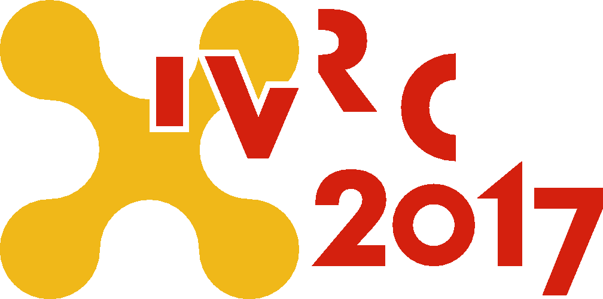
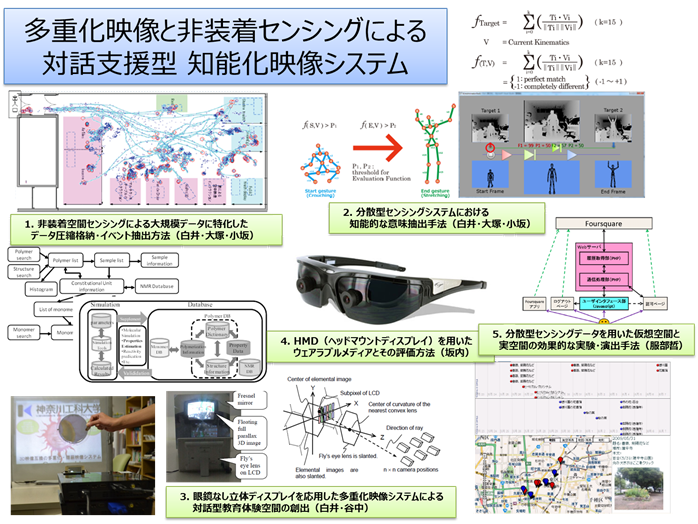

News
-
shirai wrote a new post, 「VRエンタテイメントシステムの評価」についての研究倫理情報, on the site Shirai Lab 2年 10か月前
このたび、神奈川工科大学 ヒト倫理委員会より、ヒト倫理審査の承認をいただ[…]

-
黒澤優輝 wrote a new post, C#の便利な機能Linqについて, on the site 白井研セミナー 2年 11か月前
こんにちは(￣ー￣)
今回はC#のLinqという機能についてです。
Linqとは？
Linqは配列や配列を扱うクラス(例えばList)のようなデータのかたまりを扱うクラスから情報を取得するための機能です。
Linqを利用するためには「using System.Linq;」が必要になります。
例えば、入力された文字列を半角スペースで区切って整数にしたい場合
string[] inputStr = Cons[…]

-
中村 凌雅 wrote a new post, Part10 プログラミング学習ゲーム！？コードガールこれくしょんって？ #ガルこれ （中村凌雅）, on the site 白井研セミナー 2年 11か月前
こんにちは。中村です。
今回は「コードガールこれくしょん」について書いて行こうと思います。
まず、「コードガールこれくしょん」とは？
ITプログラマ・エンジニア向け転職・就活・学習サービスのpaizaが提供しているコンテンツです。
萌えとプログラミング学習をかけ合わせたソーシャルゲームになっています。
遊び方は、よくあるソーシャルゲームのように体力を消費して探索して…
貯めたコインやダイヤでガチャを[…]

-
kai wrote a new post, IVRC企画書投稿！, on the site 白井研セミナー 2年 11か月前
どうも、こんにちは。
白井セミナーの鈴木です。6月19日IVRC企画書投稿締め切りでしたが、しっかり投稿してきました。企画書作り大変でしたね。話によると他のセミナー生たちは前日研究室でカリカリ書いてたそうで、僕も行けばよかったと後悔してます・・・。
そして7月5日、審査結果が届きました。残念ながら結果は不合格でした。結果とともに審査員からのコメントもいただいたので紹介していきたいと思います。
審査員コメント紹介[…] 
-
望月 宥冶 wrote a new post, 【御礼】GTMF 2017にて Real Baby – Real Family をご体験頂いた皆様へ, on the site Real Baby – Real Family 2年 11か月前
7月14日、東京の秋葉原UDXで行われたGTMF2017にて、展示をしてきました。
今回は、赤ちゃんに刺さっていたVIVEコントローラをVIVEトラッカーに変更し、見た目が少し可愛くなりました（当社比）
また、その他変更点として、赤ちゃんの重さを「2000g弱→2600g」へと変更し、重さを本当の赤ちゃんへと近づけました。
赤ちゃんの重さについては、まだまだ改良の余地があり、ただ重くするだけではなく、赤ちゃんの比重を[…] -
黒澤優輝 wrote a new post, 一生勉強 一生青春。←勉強って何？, on the site 白井研セミナー 2年 11か月前
こんにちは(^0_0^)
今回は勉強に関するお話とそれを聞いて思ったことについてです。
主に勉強は2種類に分けることができます。
Study
未知のことに対して行う
研究などが多い
成功したかどうかは関係なく、失敗してもよい（成功しないパターンが見つかったので成功とも言える）Learn
既知のことに対して行う[…]

-
Rex HSIEH wrote a new post, Anime Expo 2017 Los Angeles, on the site Rex's Japan Adventure 2年 11か月前
6月28日から、7日4日まで、白井研究室のManga GeneratorチームとReal Baby – Real Familyチームの6人はアメリカ最大のアニメ展示会：Anime Expo 2017(AX2017)へ参加するために、アメリカのロセンゼルスへ向かいました。今回のAX2017での展示「日本キャラVR祭」は集英社が東京近郊のVR会社を招 […]

-
shirai wrote a new post, 平成25年度重点配分（研究）成果報告書, on the site 神奈川工科大学 重点研究 2年 11か月前
研究課題名
多重化映像と非装着センシングによる対話支援型知能化映像システム
（③多重化隠蔽映像の高機能化と教育向けプラットフォームの開発）目的基礎研究，全体計画：3カ年計画／本年度：3年目
研究者名
研究代表者
情報メディア学科 白井 暁彦
研究分担者
情報メディア学科 谷中一寿，佐藤 尚，坂内祐一，服部 哲，中村隆之，小坂崇之
情報工学科 大塚 真吾
工学部 機械工学科 佐藤 智明
１． 研究の[…]  -
shirai wrote a new post, ゲーム技術のソリューション展示（2017/7/14・秋葉原）, on the site Shirai Lab 2年 11か月前
アプリ・ゲームの開発・運営に関わるソリューションが一堂に会するフォーラム「GTMF2017」(15th Game Tools & Middleware Forum)にVREAKセンターとして展示参加します。
GTMF2017 Tokyo
日時：2017年7月14日（金）
場所：秋葉原UDX[…] -
中村 凌雅 wrote a new post, Part9 #IVRC 結果発表とこれから（中村凌雅）, on the site 白井研セミナー 2年 11か月前
こんにちは。中村です。
今回はIVRC2017に応募した結果を記事にしようかと思います。
まず、どんな企画を応募したか一言でいうと、野鳥を観察する企画です。
この企画は、HMDを使わない立体視として、トリックアートから着想を得ました。
それを、野鳥観察と組み合わせたVRコンテンツになっています。
企画タイトルは、自由に選ぶことを意味する熟語「選り取り見取り」と、鳥を選んで見て撮るコンテンツ内容を掛けた「選り鳥見[…]

-
黒澤優輝 wrote a new post, IVRC2017の審査結果, on the site 白井研セミナー 2年 11か月前
こんにちは(^_^)/
今回はIVRC2017の審査結果とそこから思ったことを書こうと思います。
まず、企画案の概要としては脳波を利用して難易度調整を行い、その人の耐性に合わせたホラーゲームを作るというものです。
難易度調整の具体的な内容としてはお化けの量を増減させたり、不意打ちをするかどうかなどがあります。
結果は不合格でした。(~_~)
いただいた審査の感想の要点
コンセプトは面白そうだが[…]

-
近藤 優生 wrote a new post, IVRC2017審査結果を経て, on the site 白井研セミナー 2年 11か月前
こんにちは。近藤です。
台風がやってきたり雨が止まらない時期がやってきましたね。駅から大学まで自転車の僕は気が滅入る時期になりました。個人的にバスが好きではないので車が欲しいです。
さて、さっそく本題に。IVRC2017の企画書を提出してから早くも一カ月弱、とうとう審査結果が届きました。僕としては最初から自分で育ててきた企画ではありませんが、だからこそ、これからの準備で巻き返そう。そう思っていました。
[…]

-
山本晴貴 wrote a new post, Part5 ゲーム開発についてのアレコレ, on the site 白井研セミナー 2年 11か月前
こんにちは。いろいろと予定が重なり忙しくなってきた影響で、自分の時間が取れなくなってきています。ここ最近チーム制作でのゲーム開発ばかりやってきているため、ソロでゲーム開発がしたいと言う、自分の中の気運が高まってきています。時間を有効活用するように頑張っていますがなかなかうまくいかないものです。
・ゴールを決めよう
ある時、私の作るゲームは、なんだかんだでミニゲームのような小規模な物がほとんどで、規模の大きいゲームが全く[…]

-
黒澤優輝 wrote a new post, Knowledge is power, on the site 白井研セミナー 2年 11か月前
こんにちは！
今回はIVRCの企画書を書いてみたことによる感想や学んだことを書き連ねたいと思います。
学んだこととして、面白いものを作ることと同じくらい面白さを伝えることが大切だということが分かりました。
企画が面白いかどうかは別として、人に面白そうだと思ってもらうためには一体どうすればよいのか。
特に自分は、使える時間によって伝える情報を変える必要があるのでその塩梅が難しいと思いました。
圧縮しすぎると伝わら[…]
-
shirai wrote a new post, 集英社らとロサンゼルスAnime Expo 2017において大規模なVR作品展示 #AX2017, on the site Shirai Lab 2年 11か月前
白井研究室は集英社ジャンプVRチーム、大日本印刷、プログマインド、VR制作会社らと協力し2017/7/1〜4にロサンゼルスで開催される全米最大級の日本マンガ・アニメのためのファンイベント「Anime Expo 2017」にて「日本キャラVR祭〜Japan Character VR〜」で特設ブースを開設し、日本のコンテンツパワーを海外に発信します。
白井研究室からは子育てVRエンタテイメント「Real Baby – Rea[…]

-
中村 凌雅 wrote a new post, Part8 #メイドさんと楽しく学ぶ 初心者向けAndroidアプリ開発セミナー! #参加者募集 （中村凌雅）, on the site 白井研セミナー 2年 11か月前
こんにちわ。中村です。
今回は僕が所属している日本Androidの会 学生部＆秋葉原支部でのイベントについて話そうかと。
アプリ開発をしたいけど何から手を付ければい[…]

-
黒澤優輝 wrote a new post, 触感型コントローラーUnlimitedHandを使ってみた！, on the site 白井研セミナー 2年 11か月前
こんにちは～ (￣ー￣)
今回はUnlimitedHandというデバイスを使う機会があったので、その解説をしたいと思います。
UnlimitedHandとは何？
UnlimitedHandは腕に巻いて使用するデバイスで、デバイスの入力にはフォトリフレクタという位置を計測するセンサーと加速度ジャイロ[…]

-
kai wrote a new post, Learn?Study?「学ぶ」ということ, on the site 白井研セミナー 2年 11か月前
どうも、こんにちは。
白井研究セミナーの鈴木です。今回の白井セミナーでは英単語「learn」から始まりました。
「learn」という単語は「学ぶ」とか「習得する」といった意味があります。これに似た単語で「study」があります。これは「勉強する」、「研究」といった意味です。
白井先生は僕たちに問いかけました。「learnとstudyの違いがわかりますか？」。
「benefit」と「profit」とか、「par[…]

-
-
- もっと読み込む